Changes in PRIMAP-hist v2.6_final compared to v2.5.1_final for Slovakia
2024-09-24
Johannes Gütschow
Change analysis for Slovakia for PRIMAP-hist v2.6_final compared to v2.5.1_final
Overview over emissions by sector and gas
The following figures show the aggregate national total emissions excluding LULUCF AR6GWP100 for the country reported priority scenario. The dotted linesshow the v2.5.1_final data.
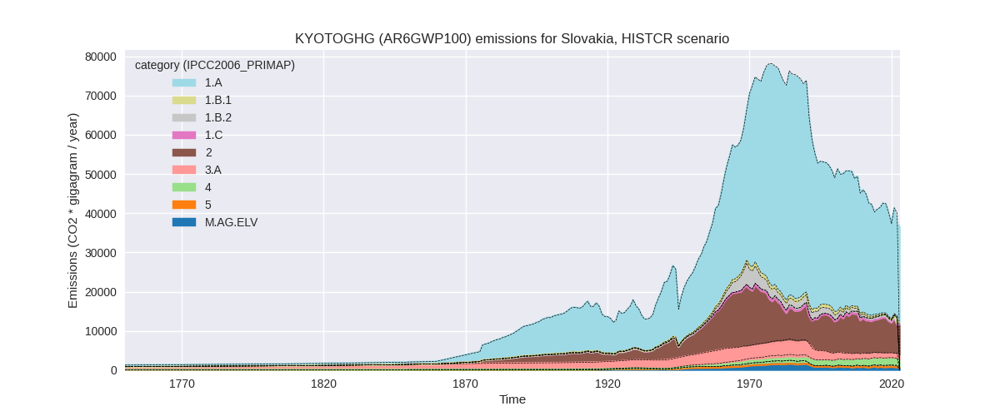
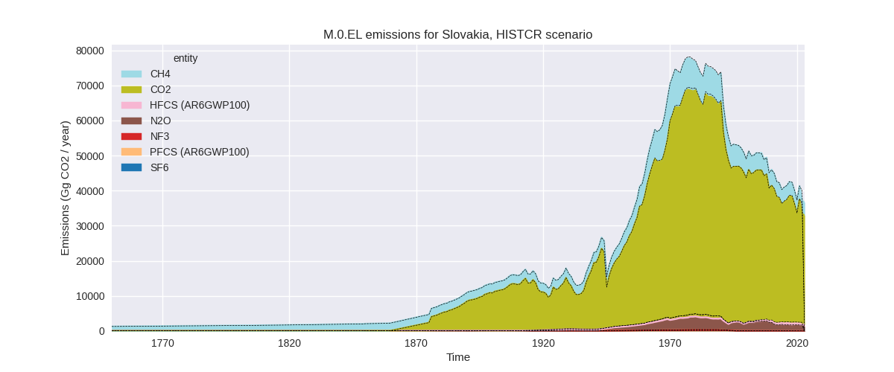
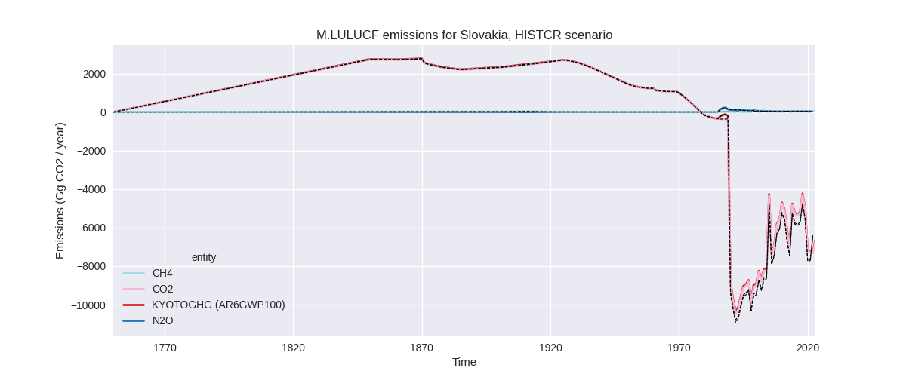
The following figures show the aggregate national total emissions excluding LULUCF AR6GWP100 for the third party priority scenario. The dotted linesshow the v2.5.1_final data.
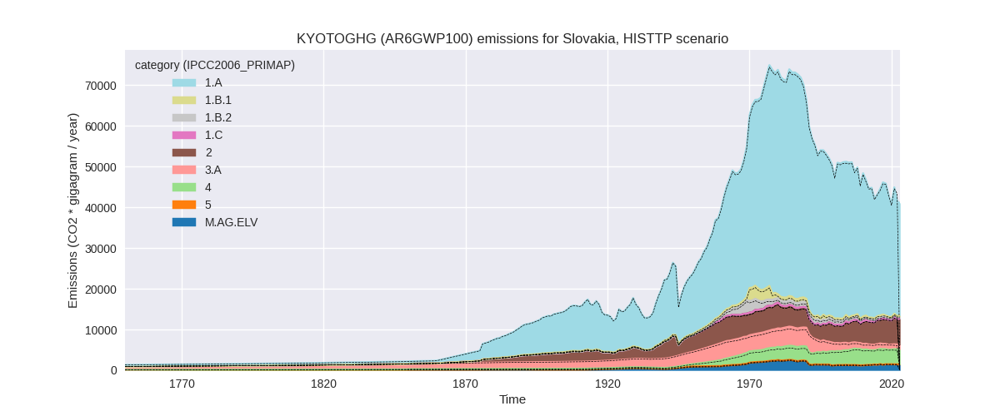
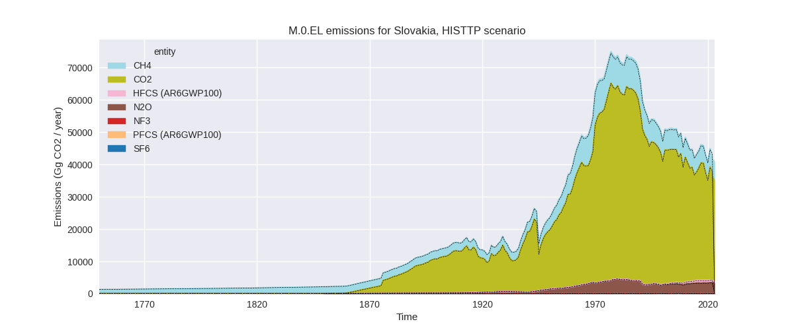
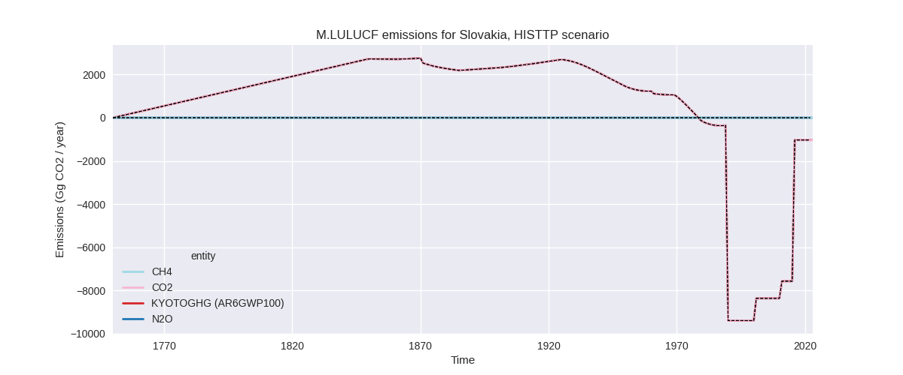
Overview over changes
In the country reported priority scenario we have the following changes for aggregate Kyoto GHG and national total emissions excluding LULUCF (M.0.EL):
- Emissions in 2022 have changed by -7.2%% (-2880.97 Gg CO2 / year)
- Emissions in 1990-2022 have changed by -0.3%% (-158.21 Gg CO2 / year)
In the third party priority scenario we have the following changes for aggregate Kyoto GHG and national total emissions excluding LULUCF (M.0.EL):
- Emissions in 2022 have changed by -4.3%% (-1878.48 Gg CO2 / year)
- Emissions in 1990-2022 have changed by 0.4%% (202.42 Gg CO2 / year)
Most important changes per scenario and time frame
In the country reported priority scenario the following sector-gas combinations have the highest absolute impact on national total KyotoGHG (AR6GWP100) emissions in 2022 (top 5):
- 1: 2, CO2 with -1221.36 Gg CO2 / year (-15.0%)
- 2: 1.A, CO2 with -1116.48 Gg CO2 / year (-4.4%)
- 3: M.AG.ELV, N2O with -508.32 Gg CO2 / year (-43.6%)
- 4: 2, HFCS (AR6GWP100) with -238.71 Gg CO2 / year (-29.8%)
- 5: 1.B.2, CH4 with 115.32 Gg CO2 / year (44.7%)
In the country reported priority scenario the following sector-gas combinations have the highest absolute impact on national total KyotoGHG (AR6GWP100) emissions in 1990-2022 (top 5):
- 1: M.AG.ELV, N2O with -372.95 Gg CO2 / year (-30.8%)
- 2: 2, CO2 with -311.71 Gg CO2 / year (-3.9%)
- 3: 1.A, CO2 with 240.86 Gg CO2 / year (0.7%)
- 4: 3.A, CH4 with 77.01 Gg CO2 / year (4.6%)
- 5: 3.A, N2O with 62.52 Gg CO2 / year (56.8%)
In the third party priority scenario the following sector-gas combinations have the highest absolute impact on national total KyotoGHG (AR6GWP100) emissions in 2022 (top 5):
- 1: 1.A, CO2 with -1873.41 Gg CO2 / year (-6.4%)
- 2: 2, HFCS (AR6GWP100) with -247.19 Gg CO2 / year (-28.9%)
- 3: 4, CH4 with 137.33 Gg CO2 / year (4.1%)
- 4: 4, N2O with 102.81 Gg CO2 / year (129.8%)
- 5: 5, N2O with 19.16 Gg CO2 / year (23.2%)
In the third party priority scenario the following sector-gas combinations have the highest absolute impact on national total KyotoGHG (AR6GWP100) emissions in 1990-2022 (top 5):
- 1: 4, CH4 with 191.98 Gg CO2 / year (6.1%)
- 2: 4, N2O with 67.02 Gg CO2 / year (90.5%)
- 3: 1.A, CO2 with -54.16 Gg CO2 / year (-0.2%)
- 4: 2, HFCS (AR6GWP100) with -7.49 Gg CO2 / year (-1.8%)
- 5: 5, N2O with 3.12 Gg CO2 / year (2.4%)
Notes on data changes
Here we list notes explaining important emissions changes for the country. ’' means that the following text only applies to the TP time series, while means that it only applies to the CR scenario. Otherwise the note applies to both scenarios.
- We have added EEA 2024 inventory data.
- Lower 2022 CO2 emissions due to lower growth rates in 1.A (CR, TP) and 2.C (CR).
- N2O from M.AG.ELV is over 30% lower cumulatively and over 40% lower in 2022 because direct emissions from agricultural soils are lower in EEA2024 than CRF2023 (CR) probably because “other” emissions from chemical industry are accounted for elsewhere.
- HFC emissions are much lower in 2022 because of a steep emissions decline in EEA2024 data (CR, TP)
- Changes in sectors 4 and 5in the TP scenario are due to the removal of FAOSTAT data.
Changes by sector and gas
For each scenario and time frame the changes are displayed for all individual sectors and all individual gases. In the sector plot we use aggregate Kyoto GHGs in AR6GWP100. In the gas plot we usenational total emissions without LULUCF. ## country reported scenario
2022
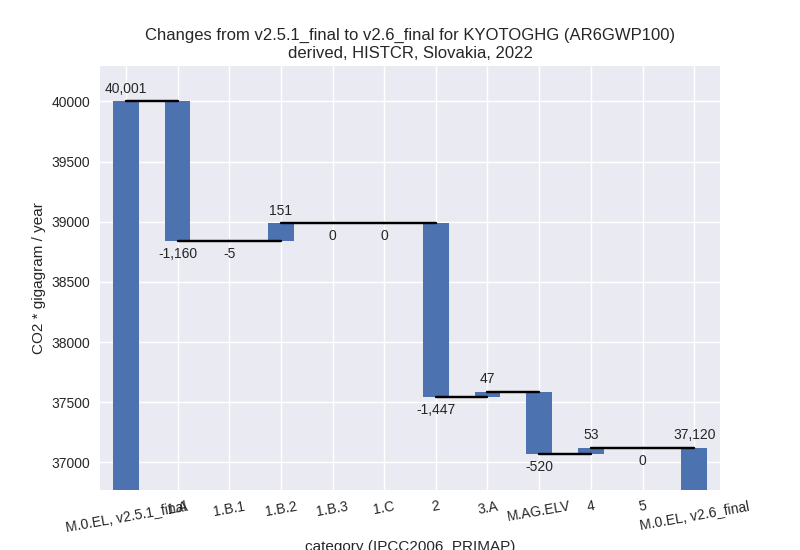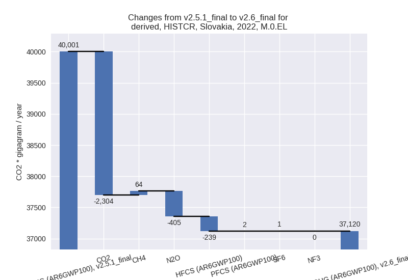
1990-2022
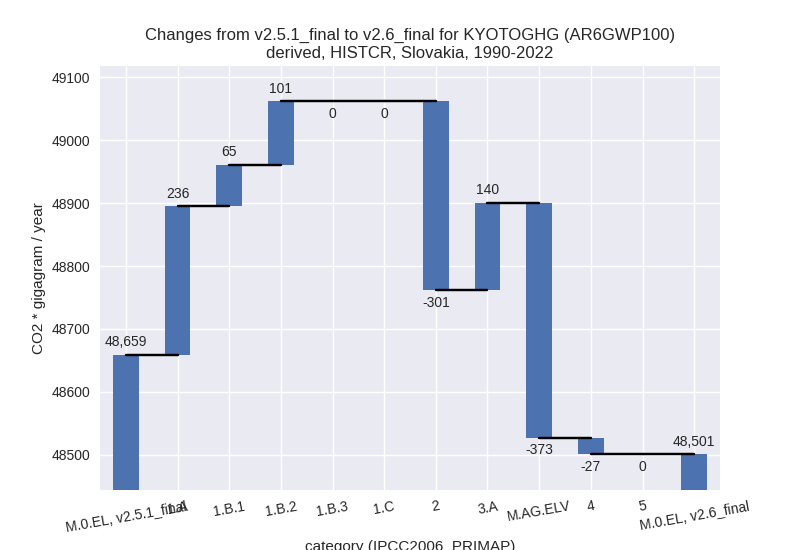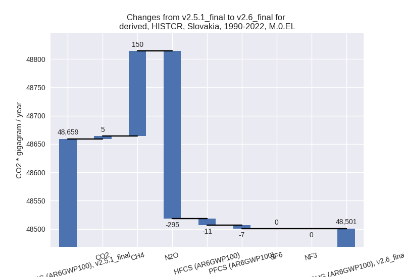
third party scenario
2022
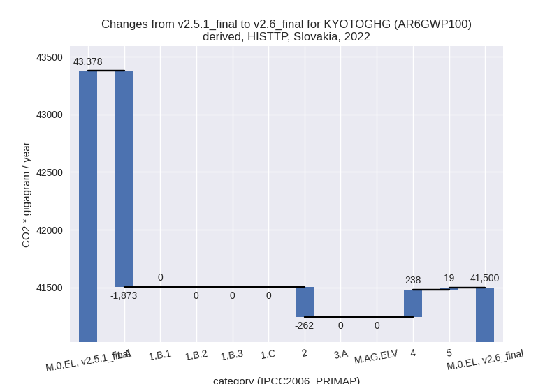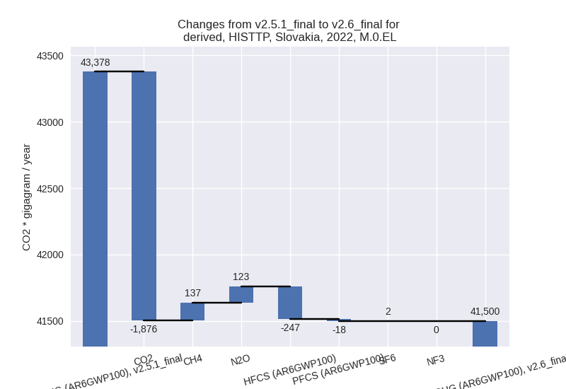
1990-2022
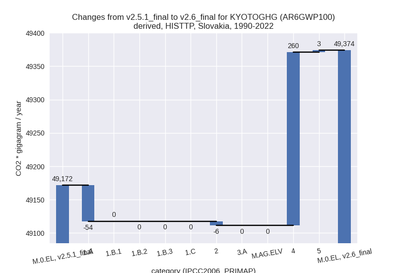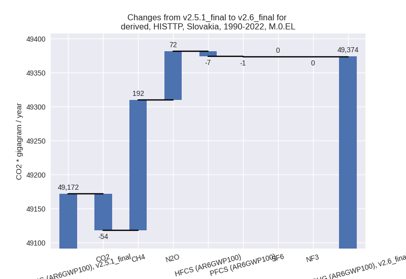
Detailed changes for the scenarios:
country reported scenario (HISTCR):
Most important changes per time frame
For 2022 the following sector-gas combinations have the highest absolute impact on national total KyotoGHG (AR6GWP100) emissions in 2022 (top 5):
- 1: 2, CO2 with -1221.36 Gg CO2 / year (-15.0%)
- 2: 1.A, CO2 with -1116.48 Gg CO2 / year (-4.4%)
- 3: M.AG.ELV, N2O with -508.32 Gg CO2 / year (-43.6%)
- 4: 2, HFCS (AR6GWP100) with -238.71 Gg CO2 / year (-29.8%)
- 5: 1.B.2, CH4 with 115.32 Gg CO2 / year (44.7%)
For 1990-2022 the following sector-gas combinations have the highest absolute impact on national total KyotoGHG (AR6GWP100) emissions in 1990-2022 (top 5):
- 1: M.AG.ELV, N2O with -372.95 Gg CO2 / year (-30.8%)
- 2: 2, CO2 with -311.71 Gg CO2 / year (-3.9%)
- 3: 1.A, CO2 with 240.86 Gg CO2 / year (0.7%)
- 4: 3.A, CH4 with 77.01 Gg CO2 / year (4.6%)
- 5: 3.A, N2O with 62.52 Gg CO2 / year (56.8%)
Changes in the main sectors for aggregate KyotoGHG (AR6GWP100) are
- 1: Total sectoral emissions in 2022 are 25614.90 Gg
CO2 / year which is 69.0% of M.0.EL emissions. 2022 Emissions have
changed by -3.8% (-1014.07 Gg CO2 /
year). 1990-2022 Emissions have changed by 1.2% (402.79 Gg CO2 / year). For 2022 the
changes per gas
are:
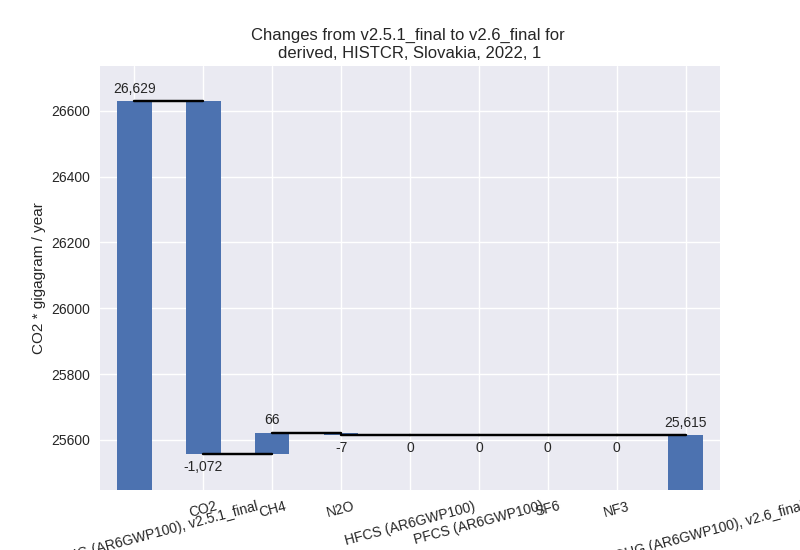
The changes come from the following subsectors:- 1.A: Total sectoral emissions in 2022 are 25004.76
Gg CO2 / year which is 97.6% of category 1 emissions. 2022 Emissions
have changed by -4.4% (-1160.01 Gg
CO2 / year). 1990-2022 Emissions have changed by 0.7% (236.27 Gg CO2 / year). For 2022 the
changes per gas
are:
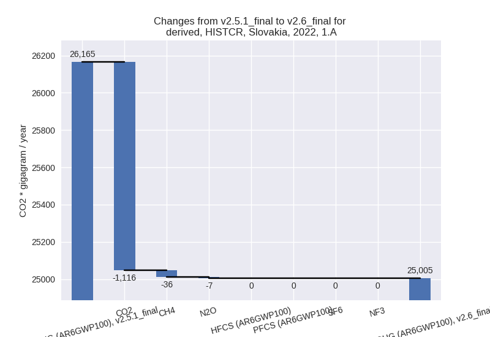
There is no subsector information available in PRIMAP-hist. - 1.B.1: Total sectoral emissions in 2022 are 200.02
Gg CO2 / year which is 0.8% of category 1 emissions. 2022 Emissions have
changed by -2.6% (-5.42 Gg CO2 /
year). 1990-2022 Emissions have changed by 11.2% (65.44 Gg CO2 / year). For 2022 the
changes per gas
are:
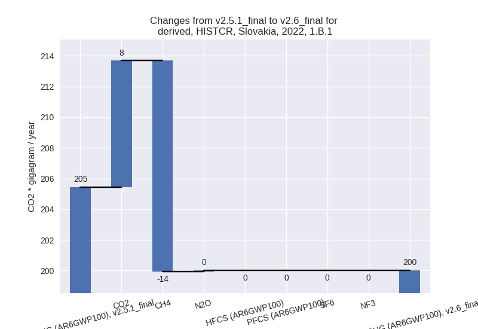
For 1990-2022 the changes per gas are:
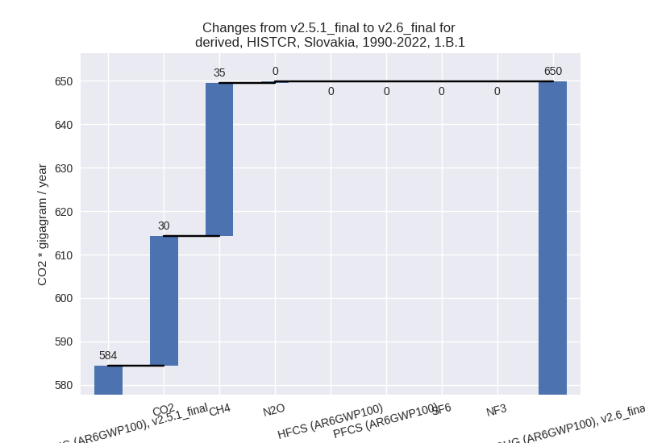
There is no subsector information available in PRIMAP-hist. - 1.B.2: Total sectoral emissions in 2022 are 410.11
Gg CO2 / year which is 1.6% of category 1 emissions. 2022 Emissions have
changed by 58.5% (151.36 Gg CO2 /
year). 1990-2022 Emissions have changed by 10.9% (101.09 Gg CO2 / year). For 2022 the
changes per gas
are:
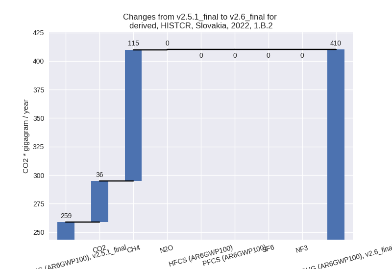
For 1990-2022 the changes per gas are:
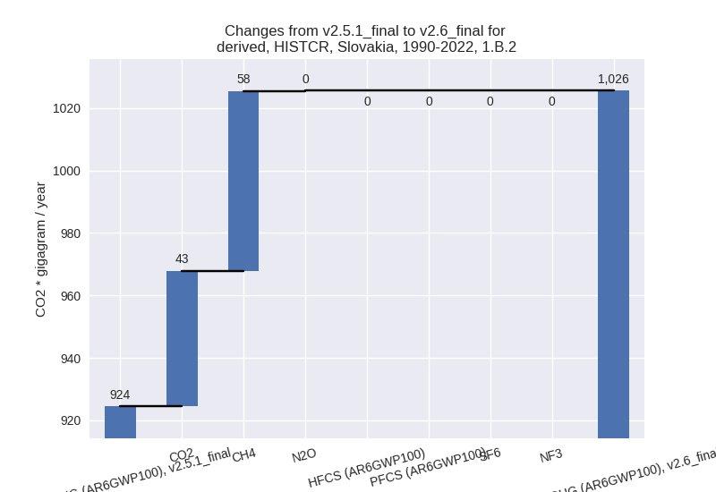
There is no subsector information available in PRIMAP-hist.
- 1.A: Total sectoral emissions in 2022 are 25004.76
Gg CO2 / year which is 97.6% of category 1 emissions. 2022 Emissions
have changed by -4.4% (-1160.01 Gg
CO2 / year). 1990-2022 Emissions have changed by 0.7% (236.27 Gg CO2 / year). For 2022 the
changes per gas
are:
- 2: Total sectoral emissions in 2022 are 7622.87 Gg
CO2 / year which is 20.5% of M.0.EL emissions. 2022 Emissions have
changed by -16.0% (-1447.20 Gg CO2 /
year). 1990-2022 Emissions have changed by -3.3% (-300.73 Gg CO2 / year). For 2022
the changes per gas
are:

For 1990-2022 the changes per gas are:
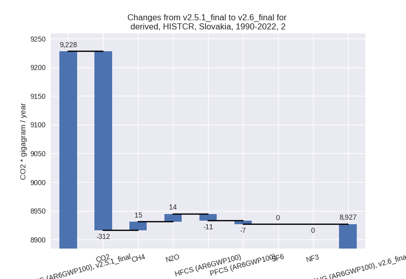 - M.AG: Total sectoral emissions in 2022 are 1952.85
Gg CO2 / year which is 5.3% of M.0.EL emissions. 2022 Emissions have
changed by -19.5% (-472.74 Gg CO2 /
year). 1990-2022 Emissions have changed by -7.7% (-233.76 Gg CO2 / year). For 2022
the changes per gas
are:
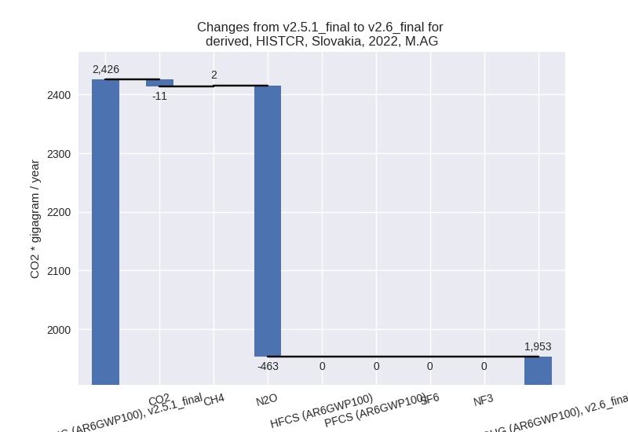
For 1990-2022 the changes per gas are:
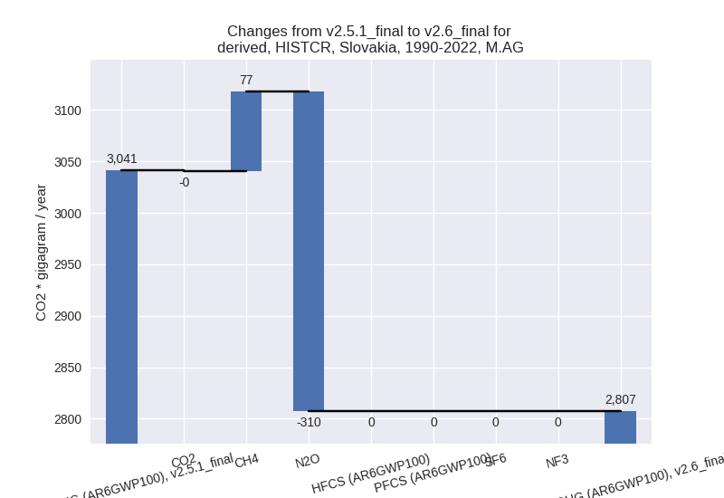
The changes come from the following subsectors:- 3.A: Total sectoral emissions in 2022 are 1235.48
Gg CO2 / year which is 63.3% of category M.AG emissions. 2022 Emissions
have changed by 4.0% (46.97 Gg CO2 /
year). 1990-2022 Emissions have changed by 7.9% (139.54 Gg CO2 / year). For 2022 the
changes per gas
are:
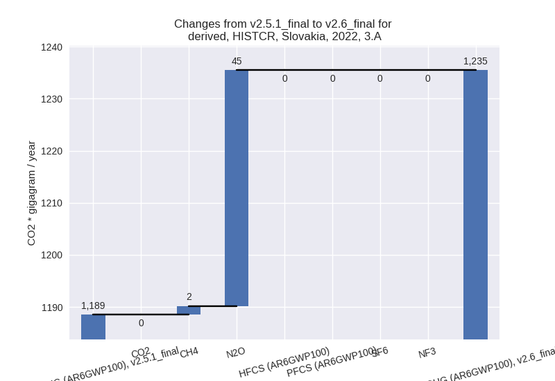
For 1990-2022 the changes per gas are:
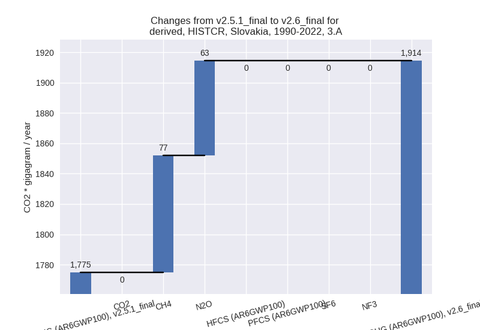
There is no subsector information available in PRIMAP-hist. - M.AG.ELV: Total sectoral emissions in 2022 are
717.36 Gg CO2 / year which is 36.7% of category M.AG emissions. 2022
Emissions have changed by -42.0%
(-519.71 Gg CO2 / year). 1990-2022 Emissions have changed by -29.5% (-373.30 Gg CO2 / year). For 2022
the changes per gas
are:
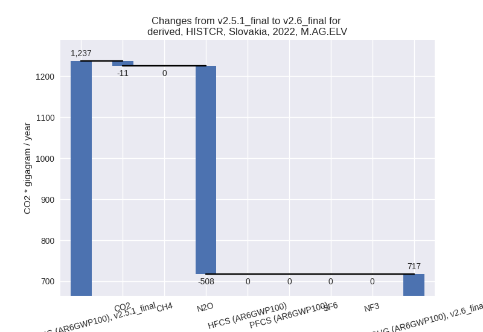
For 1990-2022 the changes per gas are:
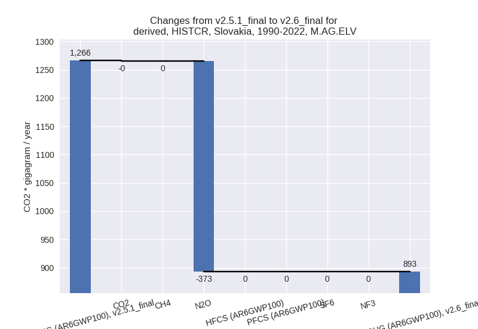
There is no subsector information available in PRIMAP-hist.
- 3.A: Total sectoral emissions in 2022 are 1235.48
Gg CO2 / year which is 63.3% of category M.AG emissions. 2022 Emissions
have changed by 4.0% (46.97 Gg CO2 /
year). 1990-2022 Emissions have changed by 7.9% (139.54 Gg CO2 / year). For 2022 the
changes per gas
are:
- 4: Total sectoral emissions in 2022 are 1929.86 Gg
CO2 / year which is 5.2% of M.0.EL emissions. 2022 Emissions have
changed by 2.8% (53.04 Gg CO2 /
year). 1990-2022 Emissions have changed by -1.6% (-26.51 Gg CO2 / year). For 2022 the
changes per gas
are:
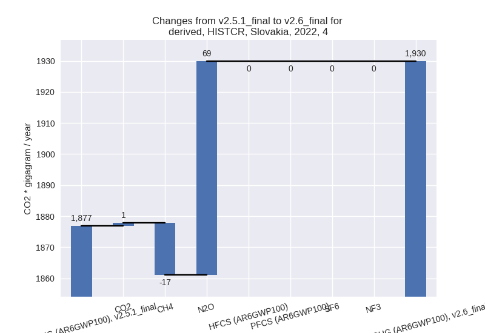 - 5: No data
third party scenario (HISTTP):
Most important changes per time frame
For 2022 the following sector-gas combinations have the highest absolute impact on national total KyotoGHG (AR6GWP100) emissions in 2022 (top 5):
- 1: 1.A, CO2 with -1873.41 Gg CO2 / year (-6.4%)
- 2: 2, HFCS (AR6GWP100) with -247.19 Gg CO2 / year (-28.9%)
- 3: 4, CH4 with 137.33 Gg CO2 / year (4.1%)
- 4: 4, N2O with 102.81 Gg CO2 / year (129.8%)
- 5: 5, N2O with 19.16 Gg CO2 / year (23.2%)
For 1990-2022 the following sector-gas combinations have the highest absolute impact on national total KyotoGHG (AR6GWP100) emissions in 1990-2022 (top 5):
- 1: 4, CH4 with 191.98 Gg CO2 / year (6.1%)
- 2: 4, N2O with 67.02 Gg CO2 / year (90.5%)
- 3: 1.A, CO2 with -54.16 Gg CO2 / year (-0.2%)
- 4: 2, HFCS (AR6GWP100) with -7.49 Gg CO2 / year (-1.8%)
- 5: 5, N2O with 3.12 Gg CO2 / year (2.4%)
Changes in the main sectors for aggregate KyotoGHG (AR6GWP100) are
- 1: Total sectoral emissions in 2022 are 29018.65 Gg
CO2 / year which is 69.9% of M.0.EL emissions. 2022 Emissions have
changed by -6.1% (-1873.32 Gg CO2 /
year). 1990-2022 Emissions have changed by -0.1% (-53.77 Gg CO2 / year). For 2022 the
changes per gas
are:
The changes come from the following subsectors:- 1.A: Total sectoral emissions in 2022 are 28200.00
Gg CO2 / year which is 97.2% of category 1 emissions. 2022 Emissions
have changed by -6.2% (-1873.41 Gg
CO2 / year). 1990-2022 Emissions have changed by -0.2% (-54.16 Gg CO2 / year). For 2022 the
changes per gas
are:
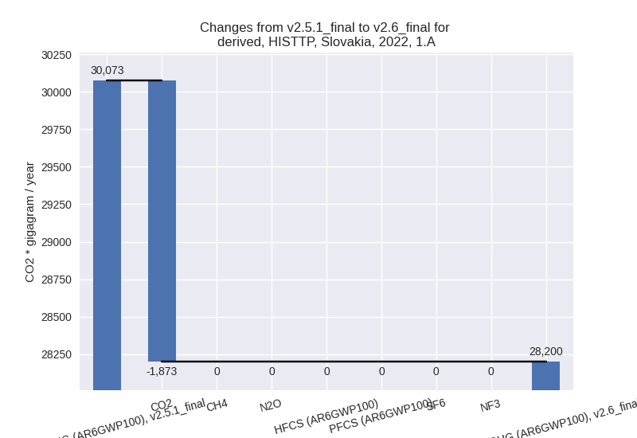
There is no subsector information available in PRIMAP-hist. - 1.B.1: Total sectoral emissions in 2022 are 259.21 Gg CO2 / year which is 0.9% of category 1 emissions. 2022 Emissions have changed by 0.0% (0.09 Gg CO2 / year). 1990-2022 Emissions have changed by 0.1% (0.40 Gg CO2 / year).
- 1.B.2: Total sectoral emissions in 2022 are 559.44 Gg CO2 / year which is 1.9% of category 1 emissions. 2022 Emissions have changed by 0.0% (0.00 Gg CO2 / year). 1990-2022 Emissions have changed by 0.0% (0.00 Gg CO2 / year).
- 1.A: Total sectoral emissions in 2022 are 28200.00
Gg CO2 / year which is 97.2% of category 1 emissions. 2022 Emissions
have changed by -6.2% (-1873.41 Gg
CO2 / year). 1990-2022 Emissions have changed by -0.2% (-54.16 Gg CO2 / year). For 2022 the
changes per gas
are:
- 2: Total sectoral emissions in 2022 are 6165.80 Gg
CO2 / year which is 14.9% of M.0.EL emissions. 2022 Emissions have
changed by -4.1% (-261.90 Gg CO2 /
year). 1990-2022 Emissions have changed by -0.1% (-6.45 Gg CO2 / year). For 2022 the
changes per gas
are:
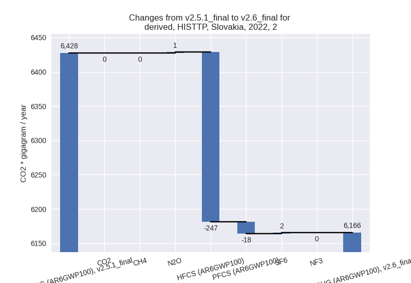 - M.AG: Total sectoral emissions in 2022 are 2505.53 Gg CO2 / year which is 6.0% of M.0.EL emissions. 2022 Emissions have changed by 0.0% (0.00 Gg CO2 / year). 1990-2022 Emissions have changed by 0.0% (0.00 Gg CO2 / year).
- 4: Total sectoral emissions in 2022 are 3708.24 Gg
CO2 / year which is 8.9% of M.0.EL emissions. 2022 Emissions have
changed by 6.8% (237.57 Gg CO2 /
year). 1990-2022 Emissions have changed by 8.0% (259.51 Gg CO2 / year). For 2022 the
changes per gas
are:
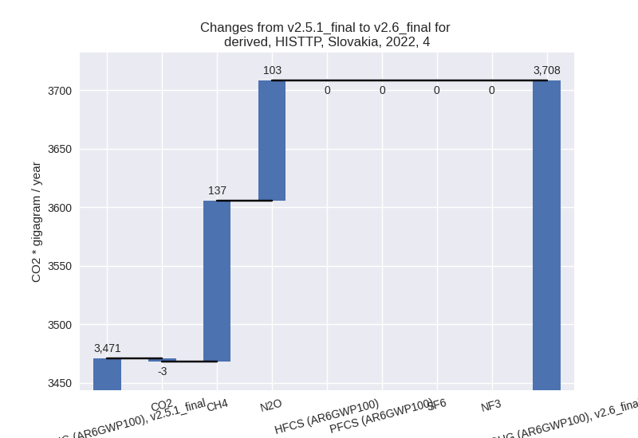
For 1990-2022 the changes per gas are:
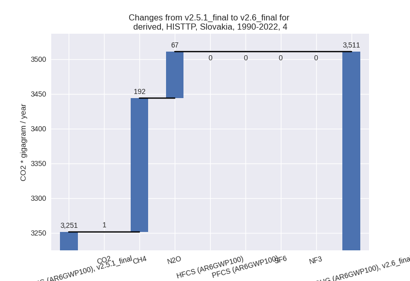 - 5: Total sectoral emissions in 2022 are 101.64 Gg
CO2 / year which is 0.2% of M.0.EL emissions. 2022 Emissions have
changed by 23.2% (19.16 Gg CO2 /
year). 1990-2022 Emissions have changed by 2.4% (3.12 Gg CO2 / year). For 2022 the
changes per gas
are:
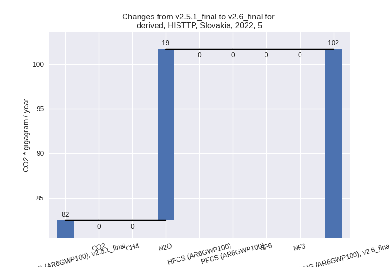
For 1990-2022 the changes per gas are:
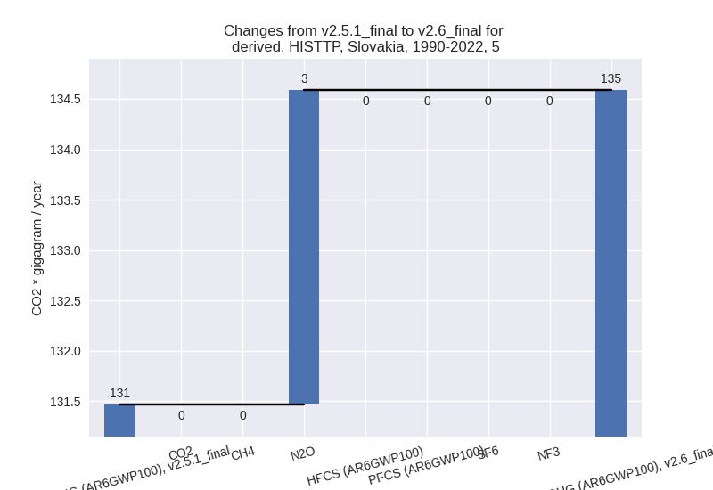